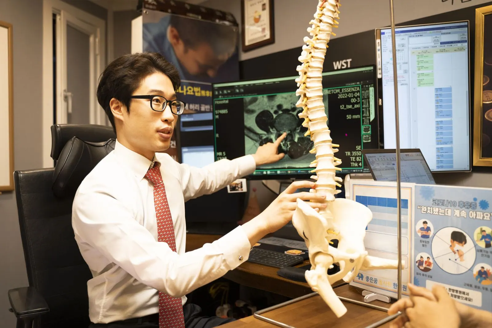
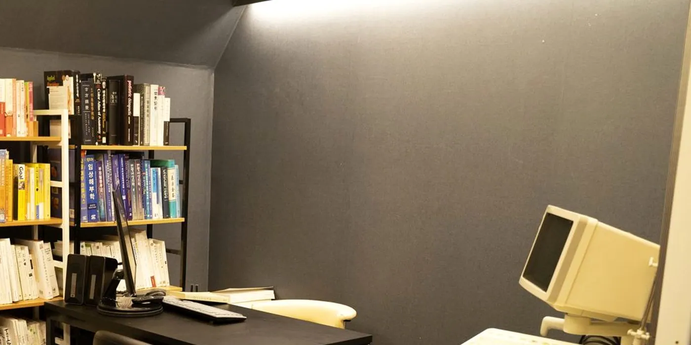

대학생이 혼자 처음 오실 때는 신분증이나 모바일 건강보험증, 복용 중인 약과 영양제 이름, 불편한 증상의 시작 시기와 심해지는 때를 적은 메모를 챙기시면 되며, 처음 오시는 날은 상담 시간이 있어 여유 있게 시간을 잡으시기를 권합니다.
여쭙는 것
- 가장 불편한 곳은 어디이고 언제부터인가요?
- 어떤 동작이나 상황에서 더 심해지나요?
- 복용 중인 약이나 영양제가 있나요?
생활에서 해 볼 것
- 신분증이나 모바일 건강보험증 챙기기
- 증상이 시작된 날과 심해지는 때를 휴대폰 메모에 적어 두기
- 복용 중인 약과 영양제는 이름이 보이게 사진 찍어 오기
한의원에서 함께 살필 것
- 공부 자세 때문에 목·허리가 불편한 경우 앉는 자세와 움직임을 함께 살핍니다.
- 시험 기간마다 소화나 잠이 흔들리는 경우 생활 리듬을 함께 살핍니다.
- 운동하다 다친 부위가 오래 불편한 경우 아픈 동작을 넓게 살피고, 필요하면 다른 의…
먼저 확인이 필요한 신호
- 다친 부위가 크게 붓고 눌렀을 때 뼈가 아픈 경우(영상 검사 먼저)
- 열이 나면서 통증이 점점 심해지는 경우
- 갑자기 생긴 심한 두통이나 가슴 통증이 있는 경우(바로 119)
신분증이나 모바일 건강보험증, 복용 중인 약과 영양제 이름, 증상이 시작된 때와 심해지는 때를 적은 메모만 챙기면 혼자 오는 첫 진료도 어렵지 않습니다. 흑석동이나 상도동에서 학교를 다니는 대학생분들께서 허리, 손목, 소화, 잠 문제로 처음 혼자 한의원에 오실 때 무엇을 가져가야 하는지 몰라 망설였다고 하십니다. 다친 부위가 크게 붓고 뼈를 누를 때 아프다면 영상 검사가 먼저입니다.
왜 이런 불편이 생길 수 있나요
- 수업과 과제로 오래 앉아 노트북을 보면 목과 허리, 손목에 부담이 쌓이기 쉽습니다.
- 시험 기간에는 잠이 줄고 끼니가 불규칙해져 소화와 잠이 함께 흔들리는 학생이 많습니다.
- 처음 자취를 시작하면 생활 리듬이 흐트러져 피로가 쌓이기도 합니다.
- 운동하다 다친 부위를 쉬지 못하고 계속 쓰면 불편이 오래가는 경우가 있습니다.

먼저 이렇게 여쭙니다
- 가장 불편한 곳은 어디이고 언제부터인가요?
- 어떤 동작이나 상황에서 더 심해지나요?
- 복용 중인 약이나 영양제가 있나요?
- 수업이나 아르바이트 때문에 진료를 받을 수 있는 시간대는 언제인가요?
일상에서 먼저 해 볼 수 있는 것
- 신분증이나 모바일 건강보험증 챙기기
- 증상이 시작된 날과 심해지는 때를 휴대폰 메모에 적어 두기
- 복용 중인 약과 영양제는 이름이 보이게 사진 찍어 오기
- 처음 오시는 날은 상담 시간이 있어 여유 있게 시간 잡기

한의원에서 함께 살필 수 있는 경우
- 공부 자세 때문에 목·허리가 불편한 경우 앉는 자세와 움직임을 함께 살핍니다.
- 시험 기간마다 소화나 잠이 흔들리는 경우 생활 리듬을 함께 살핍니다.
- 운동하다 다친 부위가 오래 불편한 경우 아픈 동작을 넓게 살피고, 필요하면 다른 의료기관 검사를 안내합니다.
좋은꿈참사랑한의원에서는 처음 오시면 접수, 상담, 필요할 때 진찰(진맥·설진·초음파 등), 치료, 귀가 전 안내 순서로 진행합니다. 처음 오시는 날은 상담 시간을 두고 불편한 점을 충분히 여쭙고, 다시 오실 때는 지난번 이야기부터 이어서 여쭙습니다.
이렇게 기록해 오시면 상담이 쉬워집니다
- 불편한 곳과 시작된 날, 심해지는 동작이나 상황
- 복용 중인 약과 영양제(이름이 보이게 사진)
- 진료를 받을 수 있는 요일과 시간대
- 다친 일이 있었다면 날짜와 상황

이런 증상은 먼저 확인이 필요합니다
- 다친 부위가 크게 붓고 눌렀을 때 뼈가 아픈 경우(영상 검사 먼저)
- 열이 나면서 통증이 점점 심해지는 경우
- 갑자기 생긴 심한 두통이나 가슴 통증이 있는 경우(바로 119)
일반적인 건강 정보이며 진단이나 치료를 대신하지 않습니다. 복용 중인 약은 처방한 의사와 상의 없이 줄이거나 끊지 않습니다.
자주 묻는 질문
예약을 해야 하나요?
네이버 예약이나 전화(02-815-7510)로 미리 예약하시면 기다리는 시간을 줄일 수 있습니다.
평일 저녁에도 진료하나요?
평일은 오후 8시까지 진료합니다(점심시간 13:00~14:00). 수업이 끝난 뒤 오셔도 됩니다.
혼자 와도 상담 시간이 충분한가요?
처음 오시는 날은 상담 시간을 두고 불편한 점을 충분히 여쭙습니다. 궁금한 점을 메모해 오시면 빠뜨리지 않고 이야기 나눌 수 있습니다.
진료 시간은 어떻게 되나요?
좋은꿈참사랑한의원은 평일 09:30~20:00(점심 13:00~14:00), 토·일·공휴일 09:30~15:00에 진료합니다.
이 글은 일반적인 건강 정보이며 개인의 진단이나 치료를 대신하지 않습니다. 증상이 있거나 복용 중인 약이 있다면 진료를 통해 확인하세요. 치료 효과는 개인마다 다를 수 있습니다.
좋은꿈참사랑한의원은 재진 때 지난번 이야기부터 이어서 여쭙니다. 진료시간과 예약은 오시는 길에서 확인하세요.